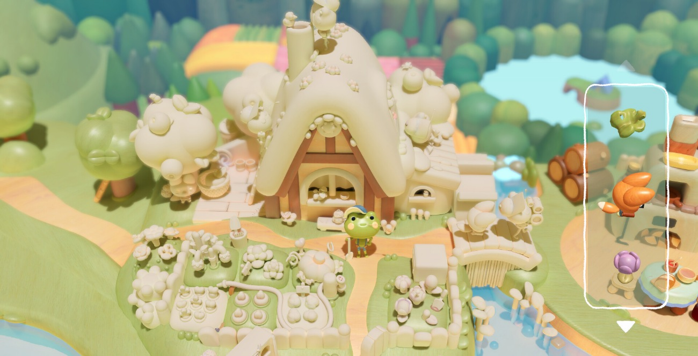
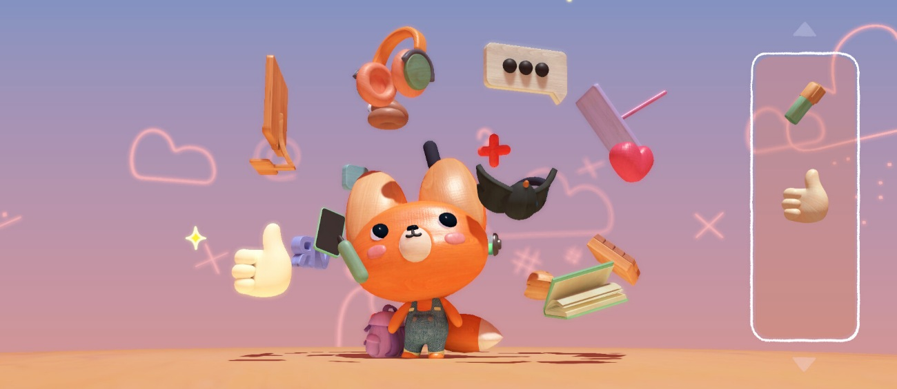
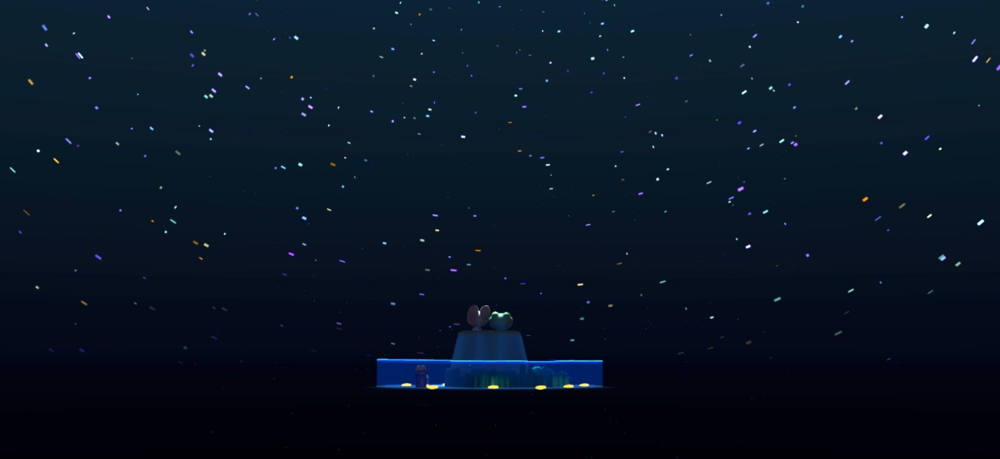

Woodo es uno de los mejores juegos cozy que he jugado jamás, de esos pensados para jugar con calma. Lo descubrí por casualidad a través del algoritmo de Steam mientras ojeaba la tienda. En estos tiempos que corren donde vivimos en un entorno que no para de exigirnos, donde la persona que decide tomarse las cosas con calma es la nota discordante y en el que es prácticamente imposible parar de pisar el acelerador y empezar a caminar en vez de correr, Woodo ha sido para mí ese faro en la oscuridad.
Un mundo que cobra vida pieza a pieza
Se trata de un indie que quiere ofrecer una experiencia relajante centrada en la construcción pieza por pieza de pequeños dioramas tridimensionales de madera. La jugabilidad es muy sencilla y se estructura por escenarios. Cada uno de estos dioramas consta de multitud de huecos donde el jugador deberá colocar las piezas correspondientes para ir completándolo. No es que sea un juego complejo, pero es que no lo necesita porque resulta increíblemente satisfactorio ver cómo los escenarios van cogiendo color progresivamente al encajar las piezas y ver cómo el diorama cobra vida poco a poco. Además, se puede interactuar con los elementos del nivel y si completas un conjunto de piezas verás una animación especial.

Los veranos que parecían no terminar nunca
La historia sigue a Foxy y Ben, un zorro y una rana, a través de diferentes escenas que representan momentos de sus aventuras compartidas. Me parece especialmente bonito que la narradora del juego sea la propia Foxy, quien rememora un verano de su infancia que dejó una huella imborrable en su corazón. Pero lo más especial es que resulta difícil identificar qué es exactamente lo que hace que su historia nos conmueva tanto. Quizá sea el tono nostálgico con el que evoca aquellos recuerdos, el precioso apartado artístico o la delicadeza con la que se reconstruyen las escenas de su pasado. O quizá sea algo mucho más sencillo: que, de alguna manera, todos nos vemos reflejados en Foxy y en ese universo de recuerdos que reconstruye, transportándonos a una infancia en la que los veranos parecían no terminar nunca y las noches eran eternas.

La música de un recuerdo lejano
Por ello, Woodo consigue evocar una serie de emociones de forma totalmente natural, y me parece precioso. No obstante, creo que gran parte del mérito lo tiene la banda sonora (escúchala en Spotify). La música es otro de los elementos que contribuyen a crear esa atmósfera tan especial que desprende el juego. Sus melodías suaves y delicadas acompañan cada escena sin robarle protagonismo, reforzando esa sensación de estar reviviendo un recuerdo lejano. Hay algo profundamente reconfortante, una mezcla de calidez, tranquilidad y melancolía que encaja a la perfección con el tono del relato. Y es que la música no se limita a acompañar los puzles, sino que ayuda a transmitir esa nostalgia por una infancia que ya quedó atrás, pero a la que, por unos instantes, Woodo consigue hacernos regresar.
Un pequeño refugio al que volver
En conclusión, recomiendo a todo el mundo encarecidamente que por favor le dé una oportunidad a este pintoresco y hermoso indie. Es un juego que me ha llegado hasta el corazón porque se nota que está hecho con mimo y cariño hasta el más mínimo detalle y he de confesar que alguna lagrimilla se me ha caído al final. Quiero cerrar con una de las frases que más me han marcado y que creo que encapsula la belleza tan singular de Woodo. "Sonríe por ese instante. Hemos estado juntos y seguro que volveremos a encontrarnos. El té seguirá siendo aromático, la mermelada nunca perderá su dulzor y yo seré por siempre el niño que mira a las estrellas".

Lo mejor
- Ver cómo los dioramas de madera cobran color y vida al encajar las piezas.
- Un apartado artístico precioso que transmite calidez.
- La historia y la banda sonora evocan la nostalgia de la infancia.
Lo peor
- Su jugabilidad sencilla ofrece poco desafío para quien busque puzles complejos.
Desglose de puntuación
Veredicto
Una experiencia relajante y profundamente emotiva. Sus dioramas de madera, la historia de Foxy y una banda sonora delicada convierten la sencillez en un refugio lleno de nostalgia.